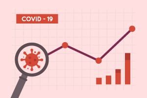

Ying LI 李颖
Data Collecting
Using provided API
Using the YouTube data API to retrieve the information from YouTube channel [GIT]
Scraping from a webpage
EDA
COVID-19 Data Analysis and Visualization
 Using the Matplotlib & Pandas libraries to analyze and visualize Covid-19 data [GIT]
Line plot
Bar plot
Pie plot
Whiskers plot
COVID-19 Tableau Dashboard
Using the Python and Tableau to build interactive Covid-19 Dashboard
Using Pandas libraries to do data preprocessing from the raw data [GIT]
Tableau Dashboard (Global)
Tableau Dashboard (US)
Tableau Dashboard (VA state)
Sentiment Analysis of Amazon Review Data
Using the scikit-learn library to build binary classification model
- Bag of words in scikit-learn (CountVectorizer)
- Classifiers comparison
Naive Bayes Logistic Regression SVMs Decision Tree Random Forest KNN
- Model Evaluation
Accuracy Precision Recall ROC AUC
Data Science Cheat Sheet with Python
Core Libraries & Statistics:
Numpy [PDF]
Pandas [PDF]
SciPy [PDF]
Importing Data: [PDF]
Data Cleaning:
Text Data [Link]
Numerical Data
Categorical Data
Visualization:
Matplotlib [PDF]
Seaborn [PDF]
Plotly [PDF]
Folium [PDF]
Machine Learning:
Scikit-learn [PDF]
Scikit-learn [Link]
Distributed Machine Learning:
PySpark - RDD Basics [PDF]
PySpark - SQL Basics [PDF]
Natural Language Processing:
NLTK [Link]
Deep Learning:
Keras [PDF]
Tensorflow [PDF]
Pytorch [link]
![[PDF]](https://cdn-images-1.medium.com/max/2000/1*dtOZSuYDonyyBvEULpJALw.png){kind=link}
Deep Learning:
Keras [PDF]
Tensorflow [PDF]
Pytorch [link]
Others:
Statistics [PDF]
Probability [PDF]
Algorithms for Supervised- and Unsupervised Learning [PDF]
HIVE [PDF]
Jupter Notebook [PDF] [Link]